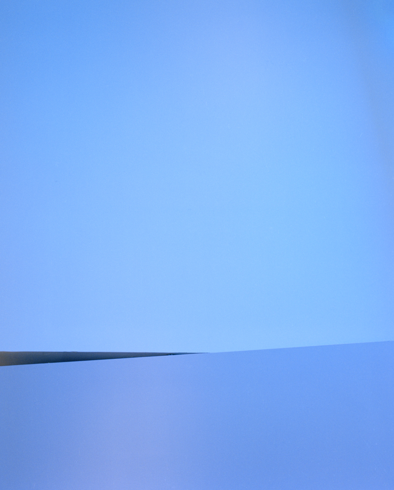
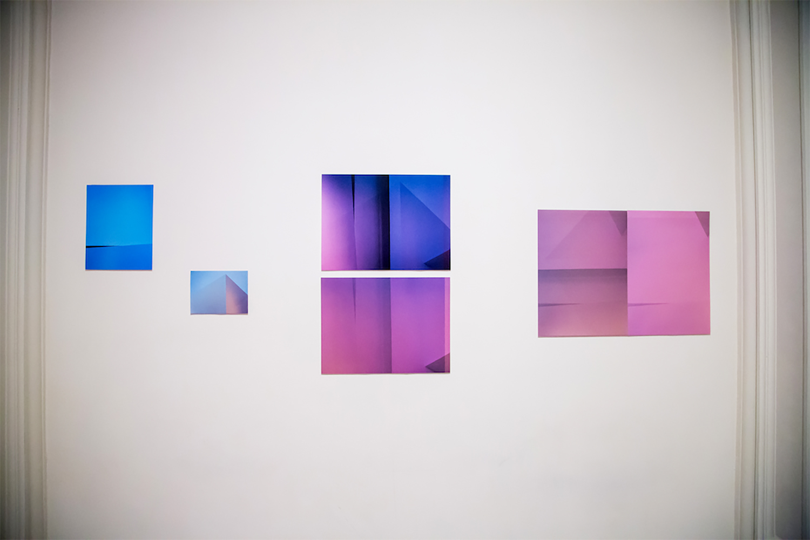

In 2018 The Jewish Museum invited a group of artists to respond to their main exhibition 'Scenes from the Collection'. I photographed the walls of the gallery where the exhibition was taking place. I was interested in the walls as the container that holds and accumulates the weight and history of the artworks. I overlayed some of the images, as a way to reference the accumulation.
